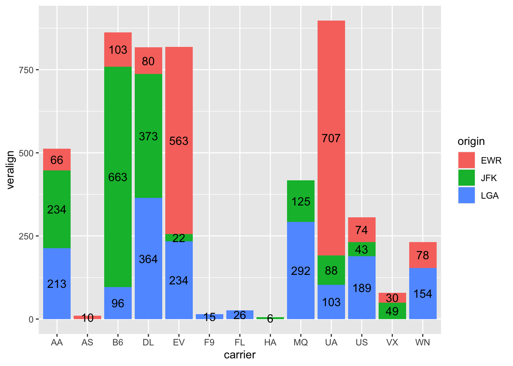
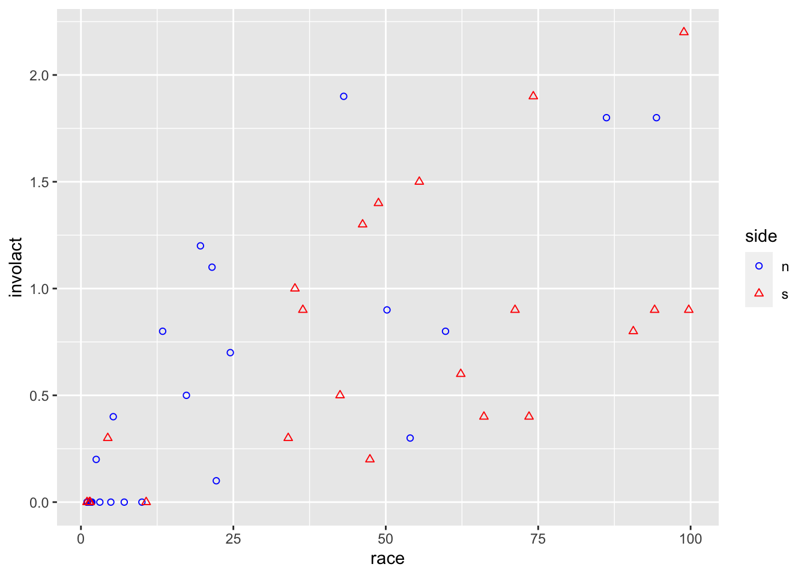
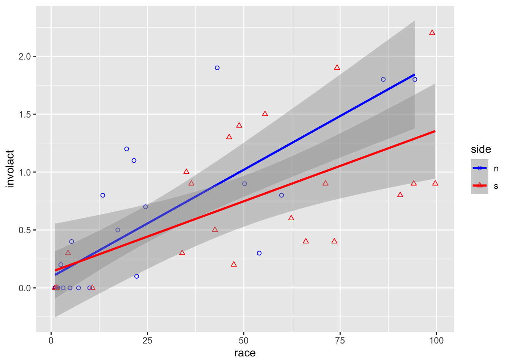
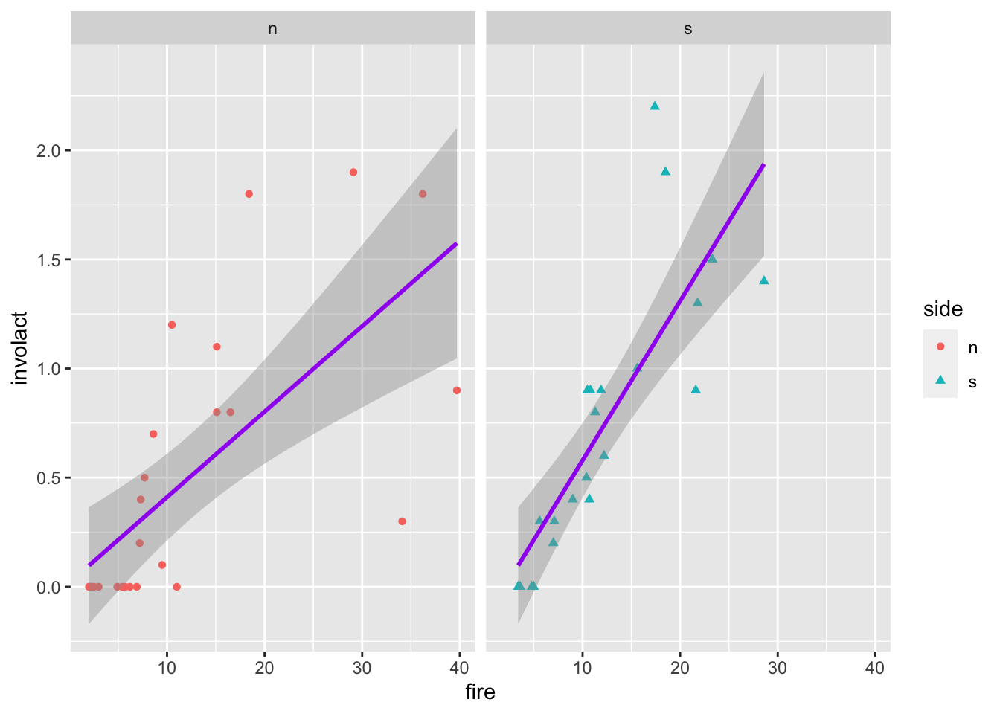

Insurance redlining refers to the practice of refusing to issue insurance to certain types of people or within some geographic area. The name comes from the act of drawing a red line around an area on a map. Now few would quibble with an insurance company refusing to sell auto insurance to a frequent drunk driver, but other forms of discrimination would be unacceptable.
In the late 1970s, the US Commission on Civil Rights examined charges by several Chicago community organizations that insurance companies were redlining their neighborhoods. Because comprehensive information about individuals being refused homeowners insurance was not available, the number of FAIR plan policies written and renewed in Chicago by ZIP code for the months of December 1977 through May 1978 was recorded. The FAIR plan was offered by the city of Chicago as a default policy to homeowners who had been rejected by the voluntary market. Information on other variables that might affect insurance writing such as fire and theft rates was also collected at the ZIP code level. The variables are:
involact new FAIR plan policies and renewals per 100 housing units,
fire fires per 100 housing units,
theft thefts per 1000 population,
race racial composition in percentage of minority,
age (of housing) percentage of housing units built before 1939,
income median family income in thousands of dollars,
side north or south side of Chicago.
The variable involact acts as a measure of insurance availability in the voluntary market, since most FAIR plan policyholders secure such coverage only after they have been rejected by the voluntary market. Insurance companies claim to reject insurances based on their past losses (captured in variables theft and fire). The U.S. Commission on Civil Rights in 1979 was interested in how much income, age of housing, and in particular race affect insurance availability.
library(faraway)data(chredlin, package="faraway") # attaches the data from the faraway packagehead(chredlin)
race fire theft age involact income side
60626 10.0 6.2 29 60.4 0.0 11.744 n
60640 22.2 9.5 44 76.5 0.1 9.323 n
60613 19.6 10.5 36 73.5 1.2 9.948 n
60657 17.3 7.7 37 66.9 0.5 10.656 n
60614 24.5 8.6 53 81.4 0.7 9.730 n
60610 54.0 34.1 68 52.6 0.3 8.231 n
1.2 Flights
The following data set contains about 1/4 million flights that departed from New York City in 2014.
library(data.table)flights <-fread("https://raw.githubusercontent.com/Rdatatable/data.table/master/vignettes/flights14.csv")# 1/4 million rows, so subsample
The variables are self-explanatory in this case
Since the data has so many rows, let’s sub-sample it.
# flights <- flights[sample(1:dim(flights)[1], 5000),] # base R version of sub-samplinglibrary(tidyverse)flights <- flights %>%slice_sample(n=5000) # tidyverse version of sub-samplinghead(flights)
The basic functions which will allow us to do most of the data manipulation tasks are
filter picks observations by chosen values
select picks variables (by their names), hence is a poor “transpose” of filter
mutate creates new variables as functions of existing ones
arrange orders the observations
group_by allows all of the above to work locally
summarize collapses values down to a single summary – only useful together with group_by
First, let us drop the non-numerical variables. We can either select all but what we want to drop or, more conveniently, use the minus-notation to specify directly what we want to drop.
As an example, let us filter flights that departed on the April Fool’s day:
fools <-filter(flights, month ==4, day ==1) # all flights on April 1stsummarize(fools, n()) # in our sub-sample, we have 17 flights on April 1st
n()
1 20
When working with tidyverse, it is customary to use the “pipe” operator %>%. Basically, f(x,y) is equivalent to x %>% f(y). This is useful when chaining operations (composing functions), e.g.,
g(f(x,y),z) # is equivalent to
x %>% f(y) %>% g(z)
While mathematically we are composing functions, for data manipulation it is often useful to think about chaining operations, i.e., using the pipe %>%.
For example, the two lines of code above can be tweaked to not store the fools variable by either composing functions or chaining operations:
summarize(filter(flights, month ==4, day ==1), n()) # orflights %>%filter(month ==4, day ==1) %>%summarize(n())
What if we want to know the number of flights on any given day?
We may notice that carrier, origin and dest are characters, but they should actually be factors. We can use mutate() to rectify that:
flights <- flights %>%mutate(carrier =as.factor(carrier),origin =as.factor(origin),dest =as.factor(dest))str(flights) # to see the overall structure of the object flights
The verb mutate() can also be used to create new variables from existing variables. For example, we might want to calculate what would the air-time be if there were no delays, or we might want to create a single departure time column using day, month and hour.
To show labels for split bars above, one just adds group=origin in the stat_count’s aes, but it is impossible to vertically align the text properly. We bypass it by creating a new variable veralign, which controls the vertical alignment.
n_flights <- flights %>%group_by(origin, carrier) %>%summarise(count =n()) %>%# now we have a table with the hist cell countsungroup() %>%group_by(carrier) %>%arrange(desc(origin)) %>%# needed because histogram ordered alphabetically from the topmutate(veralign =cumsum(count) - count/2) %>%# here we calculate the vertical alignment and append it to the data setungroup() # drop the groupingggplot() +geom_bar(data = flights, mapping =aes(x = carrier, fill = origin)) +geom_text(data=n_flights, mapping =aes(x = carrier, label=count, y=veralign), size=4)

As long as we are plotting frequencies of occurrence, there is little difference between bar plots and histograms. If the variable on the x-axis is categorical, we speak of bar plots, while if the variable is numerical and some binning has to be done, we speak of histograms. For example:
But we may also scale the y-axis to show probabilities (total area equal to one), instead of frequencies (total area equal to the number of observations). In such a case, histogram can be considered as an estimator of density function (more on that later in the semester). Hence histograms are often overlaid with other density estimators. We will see that later.
3.2 Scatterplots
Here we take a look again at the insurance redlining data, where we are interested in the effect of race on the response variable. Let’s start with the marginal relationship of the response on race, which is what we are mostly interested in. We can distinguish
ggplot(data = chredlin,mapping =aes(x = race, y = involact, color = side, shape = side)) +geom_point() +scale_color_manual(values =c("blue","red")) +scale_shape_manual(values =c(1,2))

ggplot(data = chredlin, mapping =aes(x = race, y = involact,shape = side, color = side)) +geom_point() +# adds a layer to the empty plot abovestat_smooth(method=lm) +# adds a regression line too scale_color_manual(values =c("blue","red")) +scale_shape_manual(values =c(1,2))

There is probably no difference between north and south w.r.t. the relationship between the response and race, but it might be a different story for fire
ggplot(data = chredlin, mapping =aes(x = fire, y = involact, shape = side, color = side)) +geom_point() +# adds a layer to the empty plot abovestat_smooth(method=lm)+# adds a regression line tooscale_color_manual(values =c("blue","red")) +scale_shape_manual(values =c(1,2))
What if I want only a single regression line but ability to distinguish between points at the same time? I could either use different mappings for every layer
ggplot(data = chredlin) +geom_point(mapping =aes(x = fire, y = involact, shape = side, color = side)) +stat_smooth(method=lm, mapping=aes(x = fire, y = involact), color ="purple")+scale_color_manual(values =c("blue","red")) +scale_shape_manual(values =c(1,2))
or, equivalently, use one global mapping in ggplot (the most general one) and then specify it a bit more for some layers
ggplot(data = chredlin, mapping=aes(x = fire, y = involact)) +geom_point(mapping =aes(shape = side, color = side)) +stat_smooth(method=lm, color ="purple")
If we want to split into multiple plots, use the facet_wrap function
ggplot(data = chredlin, mapping =aes(x = fire, y = involact, shape = side, color = side)) +geom_point() +stat_smooth(method=lm, color ="purple") +facet_wrap(~ side) # split by a value of a factor

For faceting by two factor variables, we can use facet_grid instead, such as if we wanted to create scatterplots for our flights data, split by carrier and origin (we filter only some carriers so we don’t have too many plots).
Exercise: create histograms of dep_delay for all three origins and seven consecutive days in the flights data set.
Back to the chredlin data set, we take a closer look at some observations in the scatterplot of involact and fire, that might be outliers or leverage points:
Let’s now make some scatterplots with the outliers and leverage points highlighted by overploting.
ggplot() +geom_point(data = chredlin, mapping =aes(x = fire, y = involact)) +geom_point(data = outliers, mapping =aes(x = fire, y = involact), col ="blue", pch =17, size=3) +geom_point(data = leverage_pts, mapping =aes(x = fire, y = involact), col ="red", pch =18, size=3)
Alternatively, we could incorporate the information about which points are outliers and which are leverage points into the data set as a new variable and use it for plotting. The code is quite ugly (notice how we start with booleans, then turn them into numericals, and then re-type them into factors), but it does the job.
Another alternative would be to use fortify() to add residuals and Cook’s distances from a linear model fit directly to the data set. Then we could use mutate() more naturally to decide which observations are outliers and leverage points.
3.3 Boxplots
Similarly to histograms, boxplots can give us some idea about distributions. Unlike histograms, boxplots do not really capture an underlying density shape, but only visually give several summary statistics and points in the tails.
Using the fill argument here creates a grouped boxplot, where grouping is given by the fill variable. To reduce the size of the plot, we filter only four carriers.
There are numerous ways how to display multiple plots. The default is to set par(mfrow = c(n_rows, n_cols)) before plotting, an alternative is the lattice package, but these do not work with ggplot. With ggplot, one can utilize ggarrange() from the ggpubr package. However, these will require you to do a lot of copy-pasting since you still need to create plots individually, but sometimes we want to create numerous plots similar in nature. To this point, the ggplot2’s facet_wrap function allows you to split into numerous plots by a value of a factor.
But what if we wish to create one plot for every variable? This is doable with facet_wrap provided we have:
all the values (in our data frame) given as a single variable
another variable linking the original variables to the values.
This is exactly what we get by using pivot_longer() below. The argument everything() specifies we want to keep all the variables, otherwise we could use the variable names like with select() (just here, multiple variables have to be wrapped in c() due to the function’s syntax) to keep only some or discard some variables. pivot_longer() will give us a long-format data frame with two columns: value and name. Then we plot value and wrap the facets based on name.
The complement of pivot_longer() is pivot_wider(). We may want to use it, e.g., after group_by() and summarize(), which naturally lead to a long table. For example, assume we want to produce a heatmap of the average departure delay of flights on different days (x-axis) and months (y-axis), in order to see average departure delay in a calendar-like fashion. While this is not terribly useful, it is done below.
While we could create a heatmap using ggplot2’s geom_tile(), I personally find levelplot() of the lattice package more useful for quick plotting. One can do great heatmaps with ggplot2 and geom_tile(), but it requires some work to set up the color schemes and to magnify the colorkey.
While the previous heatmap is not so useful, we will later see that heatmaps are quite handy e.g. when probing performance of a certain method based on two parameters.
3.5 Marginal Scatterplots with Regression Lines and Outliers
If we fit a linear model to the response variable involact with all available variables (except side) as covariates, we notice that there are some outliers and leverage points (looking at the Cook’s distance). Wouldn’t it be nice to add these into the marginal scatterplots directly to see which scatter points belong to the outliers?
Firstly, If we wish to have scatterplots with the response variable involact on the y-axes, we naturally need one more column with involact values in the long format. This is actually done automatically by dropping involact from pivoting.
Secondly, let’s denote the outliers. We will use the second extra-variable approach (as opposed to the over-plotting approach). We create an additional variable which tells us, which of the observations are outliers.